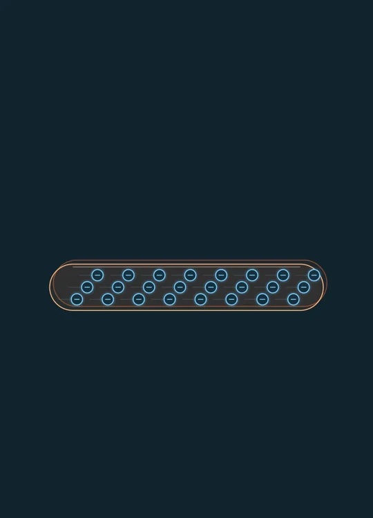
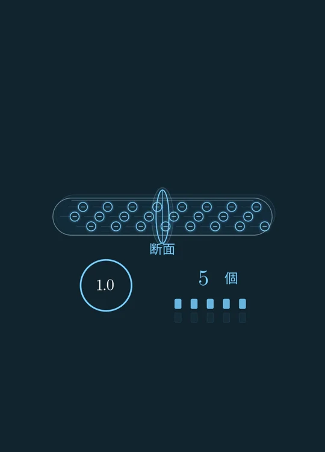
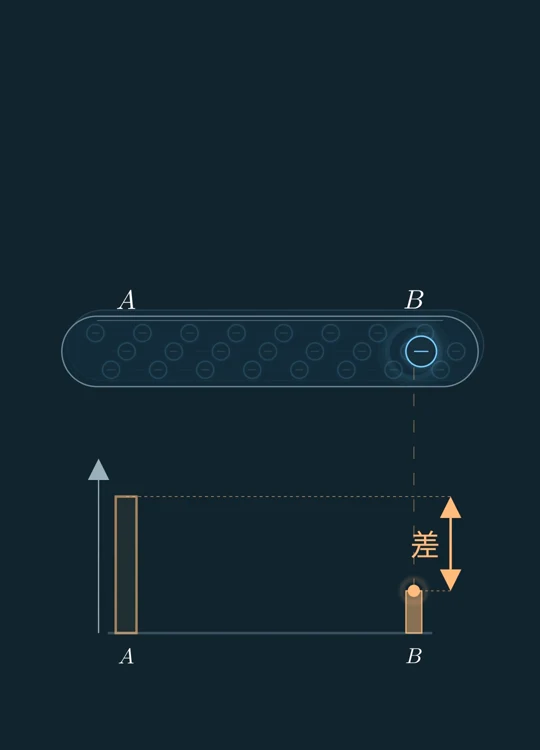
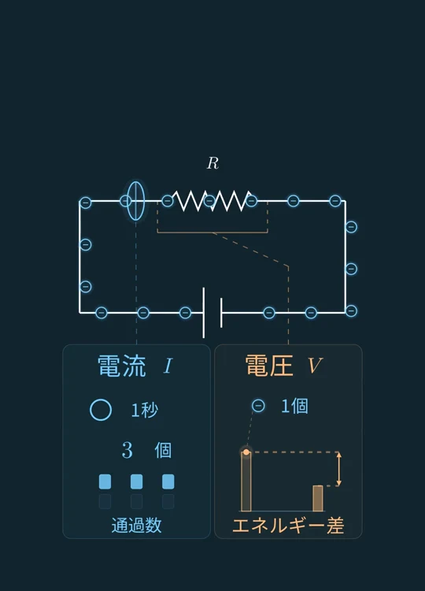
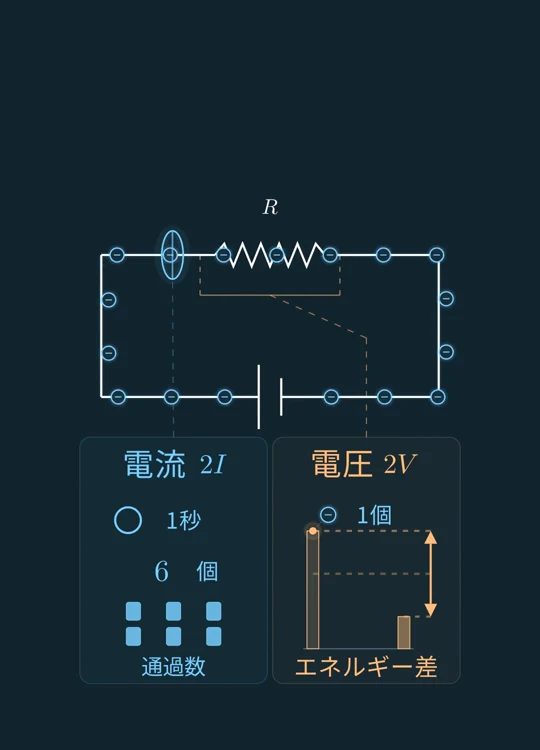
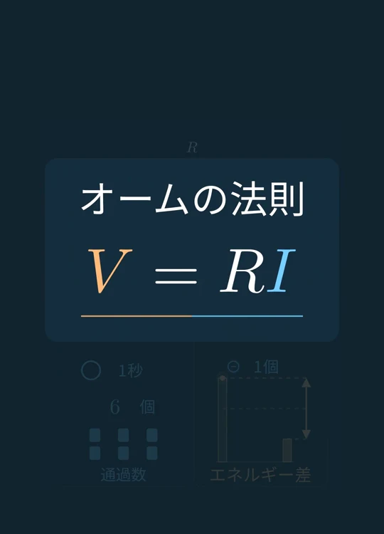

VIDEO 05 / 電流と電圧
電流と電圧って、そもそも何？
同じ電子でも、電流と電圧では見る量が違う。導線の断面を通る電子の量と、1電子あたりのエネルギー差を、図から振り返る。
動画で見る
画像で、ざっくり振り返る
電子の流れとエネルギー差から、回路とオームの法則へ。
-
STEP 01
金属導線の中の電子に注目
金属導線の中には、多数の電子がある。同じ電子を見ながら、電流と電圧で何に注目するのかを切り替える。

場面 1 · 画像を選ぶと拡大 -
STEP 02
電流は、断面を通る電子の量
ある断面を1秒間にどれだけ電子が通るか。通過した電子を記録して、単位時間あたりに流れる量を見る。導線の中にある電子の総数とは区別する。

場面 2 · 画像を選ぶと拡大 -
STEP 03
電圧は、1電子あたりのエネルギー差に対応
今度は電子1個に注目する。AB間で、その電子の電気的なエネルギーがどれだけ変わるかを見る。バーの高さは電子の位置エネルギーを表し、矢印はその差の大きさを示す。

場面 3 · 画像を選ぶと拡大 -
STEP 04
別の量が、回路の中で関係する
電流と電圧は別の量だが、電気回路では密接に関係する。左の青い計測は抵抗付近の断面を通る電子の量、右の橙の図は抵抗の両端に対応する電子1個のエネルギー差を示す。

場面 4 · 画像を選ぶと拡大 -
STEP 05
同じ抵抗なら、電圧が2倍になると電流も2倍
抵抗と温度などの条件を保って電圧を2倍にすると、同じ1秒に通る電子の量も2倍になる。通過の記録は3個から6個へ変わり、電子1個のエネルギー差も2倍になる。

場面 5 · 画像を選ぶと拡大 -
STEP 06
関係を表すのが、オームの法則
一定の抵抗では、電圧Vと電流Iをオームの法則 V = RI が結ぶ。電流と電圧で見ている量を区別したうえで、その関係を式にする。

場面 6 · 画像を選ぶと拡大


単位と図の補足
電子1個の電気的な性質が一定なので、毎秒の正味の通過数が2倍になれば、電流も2倍になる。図の四角は通過の記録で、導線に電子を追加した数ではない。
電圧とエネルギー差は、比例して対応する別の量。電子1個では、1 Vの電位差の大きさに1 eVの電気的なエネルギー差の大きさが対応する。バーの高さは電子の電気的な位置エネルギーを表し、電位の高低や電子の速さのグラフではない。
オームの法則 V = RI は、抵抗が一定の条件で使う。図の粒子数・移動速度・バーの高さは、対応を見せるための模式的な表示。
参考：OpenStax, University Physics Volume 2 — Electrical Current / Electric Potential and Potential Difference / Ohm’s Law